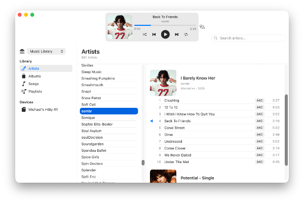
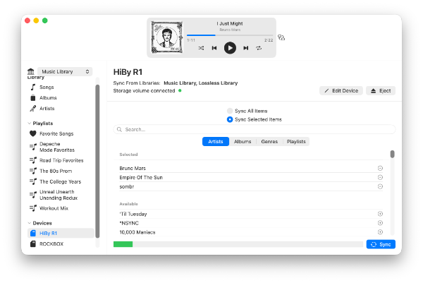
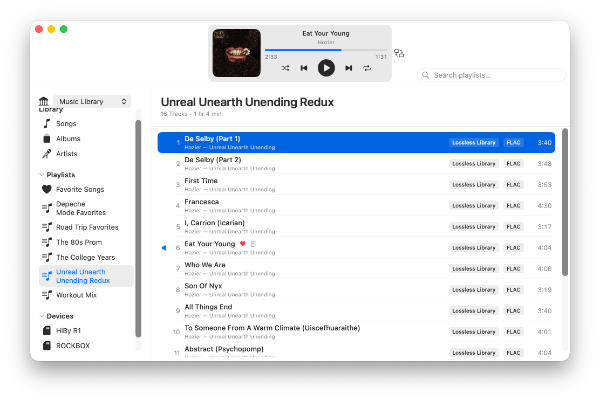
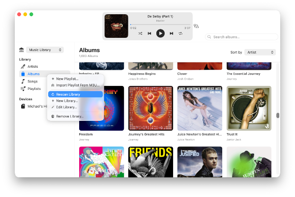

DAPComposer
Manage your local music library, and sync it straight to your digital audio player.
Features
Effortless Library Management
Point DAPComposer at your local music folders and it takes care of the rest, keeping your artists, albums, and playlists organized and ready to sync.

One-Click Sync
Select the artists, albums, or playlists you want, then sync them to your digital audio player in one step — no manual file copying required.

Playlist Creator
Create custom playlists by selecting songs from your library, then sync them to your digital audio player with a single click.

Rescan Library
Rescan your music library at any time to pick up new additions or changes to your collection, then sync to update your device — no more mismatches between your library and what's on your player.

Download
The DAPComposer trial is available for macOS on the App Store. It contains a 100 song sync limit, which can be removed with a one-time $4.99 in-app purchase for unlimited syncing.
Getting Started
Once you've downloaded DAPComposer, you'll be syncing your music in just a few steps.
- 1 Add your music library.
- 2 Add your digital audio player.
- 3 Select the artists/albums/playlists to sync.
- 4 Sync your files.